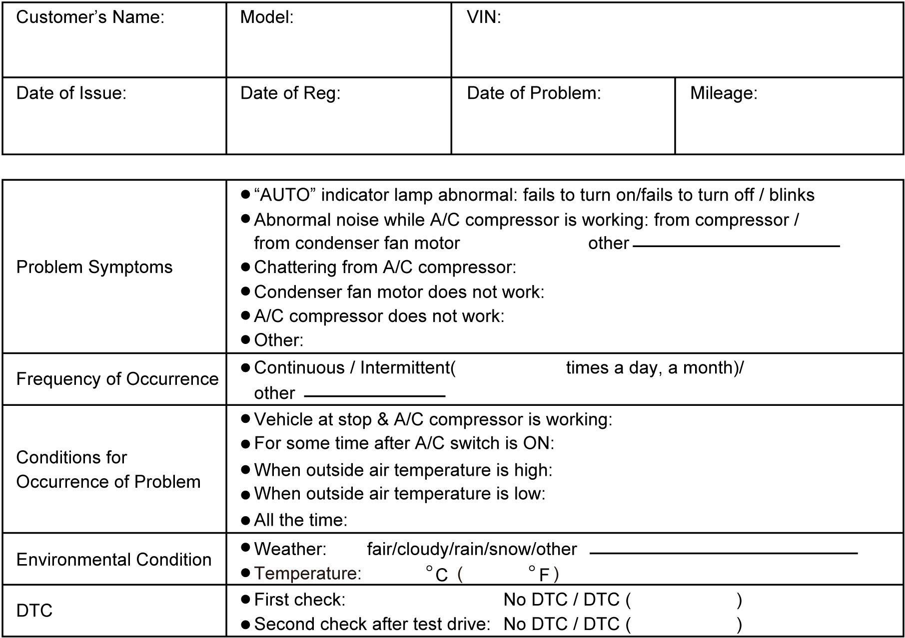

7B
| Air Conditioning System Check |
| Step | Action | Yes | No |
|---|---|---|---|
| 1 |
Customer complaint analysis
1)Perform Step 1. Customer complaint analysis.
Was customer complaint analysis performed?
|
Go to Step 2.
|
Perform customer complaint analysis.
|
| 2 |
Visual inspection
1)Perform Step 2. Visual inspection.
Is there any faulty condition?
|
Repair or replace defective part.
|
Go to Step 3.
|
| 3 |
DTC check
1)Perform Step 3. DTC check.
Is there any DTC?
|
Go to Step 4.
|
Go to Step 5.
|
| 4 |
DTC troubleshooting
1)Perform Step 4. DTC troubleshooting.
Is there any faulty condition?
|
Repair or replace defective part, and then go to Step 7.
|
Go to Step 5.
|
| 5 |
A/C system performance inspection
1)Perform Step 5. A/C system performance inspection.
Is there any faulty condition?
|
Repair or replace defective part, and then go to Step 8.
|
Go to Step 6.
|
| 6 |
A/C system symptom diagnosis
1)Check and repair A/C system.
Is there any faulty condition?
|
Repair or replace defective part, and then go to Step 8.
|
Go to Step 7.
|
| 7 |
Check for intermittent problem
1)Check for intermittent problems.
Is there any faulty condition?
|
Repair or replace defective part, and then go to Step 8.
|
Go to Step 8.
|
| 8 |
Final confirmation test
1)Perform Step 8. Final confirmation test.
Is there any malfunction code?
|
Go to Step 4.
|
End.
|
Description for Each Step
Step 1. Customer complaint analysis
Talk to customer, and then record details of the problem.
NOTE:
The form is a standard sample. It should be modified according to conditions characteristic of each market.
Customer questionnaire form (Example)

 "Expand image")
Step 2. Visual inspection
As a preliminary step, perform visual check of the items that support proper function of the air conditioning system referring to Visual Inspection:Automatic Type.
Step 3. DTC check
Check DTC referring to DTC Check:Automatic Type“.
Step 4. DTC troubleshooting
Based on the DTC, perform an applicable DTC diagnostic flow and locate the cause of the trouble, namely in a sensor, wire harness, connector, actuator, ECM or other part and repair faulty parts.
Step 5. A/C system performance inspection
Check A/C system suspected to be a possible cause referring to A/C System Performance Inspection:Automatic Type.
Step 6. A/C system symptom diagnosis
Check any part or system suspected to be a possible cause referring to A/C System Symptom Diagnosis:Automatic Type.
Step 7. Check for intermittent problem
Check parts that are prone to cause intermittent problem (e.g. wire harness, connector, etc.), referring to Intermittent Connection and Poor Contact Inspection and related circuit of trouble code recorded.
Step 8. Final confirmation test
Check that trouble symptom has disappeared and A/C system is free from abnormal conditions. Clear recorded DTCs, check that the same DTC is not detected and check if any other DTC is detected.